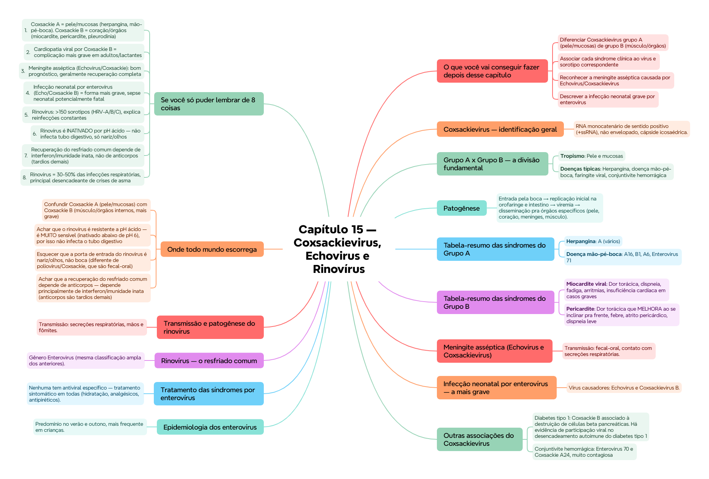

Microbiología II · P1 · Virología · Picornavirales
🫀 Capítulo 15 — Coxsackievirus, Echovirus e Rinovírus
ClinicusMed · Dossiê Clinicus — Padrão de Excelência
Nv. 1
0 XP
🎯 O que você vai conseguir fazer depois desse capítulo
Diferenciar Coxsackievirus grupo A (pele/mucosas) de grupo B (músculo/órgãos)
Associar cada síndrome clínica ao vírus e sorotipo correspondente
Reconhecer a meningite asséptica causada por Echovirus/Coxsackievirus
Descrever a infecção neonatal grave por enterovírus
Classificar o rinovírus e explicar por que causa reinfecções constantes
Entender por que o rinovírus fica restrito ao trato respiratório superior
🦠 Coxsackievirus — identificação geral
RNA monocatenário de sentido positivo (+ssRNA), não envelopado, cápside icosaédrica. Relativamente resistente ao ambiente e ao ácido gástrico. Transmissão: fecal-oral e secreções respiratórias.
Subgrupo importante de Enterovirus (Picornaviridae). Diferencia-se do poliovírus e do Echovirus por sua maior patogenicidade e espectro de doenças.
📌 O que o professor cobra nesta seção: essa divisão A x B é a base organizacional de todo o capítulo — Coxsackie A = pele/mucosas, Coxsackie B = coração/órgãos internos. Decore essa regra antes de tudo o resto.
🔄 Patogênese
Entrada pela boca → replicação inicial na orofaringe e intestino → viremia → disseminação pra órgãos específicos (pele, coração, meninges, músculo).
🏥 Detecção do vírus por fase: sangue (primeiras etapas), faringe (primeiros dias), fezes (até 5-6 semanas). Replica principalmente no trato digestivo, mas não costuma causar doença intensa ALI — a doença aparece nos órgãos-alvo da disseminação.
📋 Tabela-resumo das síndromes do Grupo A
Doença
Sorotipo
Características
Herpangina
A (vários)
Faringite febril, vesículas em palato, faringe, amígdalas, língua
Doença mão-pé-boca
A16, B1, A6, Enterovirus 71
Vesículas bucais, palmas e plantas, extensão a braços/pernas, cicatrização sem crostas
Conjuntivite hemorrágica
Enterovirus 70, Coxsackie A24
Início abrupto, olho vermelho, edema, dor, hemorragia subconjuntival. Muito contagiosa
Herpangina — detalhes: febre alta súbita, dor de garganta intenso, vesículas em palato mole e amígdalas, dificuldade pra engolir.
Doença mão-pé-boca — detalhes: febre leve, vesículas na boca, lesões nas mãos/pés, dor ao engolir, irritabilidade em crianças.
❤️ Tabela-resumo das síndromes do Grupo B
Doença
Características
Miocardite viral
Dor torácica, dispneia, fadiga, arritmias, insuficiência cardíaca em casos graves
Pericardite
Dor torácica que MELHORA ao se inclinar pra frente, febre, atrito pericárdico, dispneia leve
Pleurodinia epidêmica (Bornholm)
Dor torácica súbita intensa (músculos intercostais/torácicos), dor ao respirar, febre, espasmos musculares
💭 A cardiopatia viral por Coxsackie B é a complicação mais grave em adultos e lactantes — pode evoluir pra miocardiopatia dilatada em alguns casos.
🧠 Meningite asséptica (Echovirus e Coxsackievirus)
Transmissão: fecal-oral, contato com secreções respiratórias. Tropismo: meninges, SNC.
Clínica: febre, cefaleia intensa, rigidez de nuca, fotofobia, náuseas e vômitos. Sorotipos A7, A9, B causam quadro com paresia leve reversível.
🏥 Diferente da meningite bacteriana, a meningite asséptica por enterovírus geralmente tem bom prognóstico, com recuperação completa na maioria dos casos.
👶 Infecção neonatal por enterovírus — a mais grave
Vírus causadores: Echovirus e Coxsackievirus B. Transmissão: perinatal, fecal-oral, contato com secreções maternas. Tropismo: SNC, coração, fígado.
Clínica: letargia, febre ou hipotermia, dificuldade respiratória, sepse neonatal, miocardite ou meningite.
🏥 É a forma clínica mais grave do capítulo — pode ser potencialmente fatal em neonatos, exigindo manejo hospitalar intensivo com suporte respiratório e hemodinâmico.
🩸 Outras associações do Coxsackievirus
Diabetes tipo 1: Coxsackie B associado à destruição de células beta pancreáticas. Há evidência de participação viral no desencadeamento autoimune do diabetes tipo 1
Conjuntivite hemorrágica: Enterovirus 70 e Coxsackie A24, muito contagiosa
🌍 Epidemiologia dos enterovírus
Predomínio no verão e outono, mais frequente em crianças. Relação com saneamento: em países com má higiene, infecção precoce e MENOS casos paralíticos (imunidade adquirida cedo, ainda protegida por anticorpos maternos). Em países desenvolvidos, infecção tardia = MAIOR risco de forma paralítica (o poliovírus, capítulo anterior, segue esse mesmo padrão).
💊 Tratamento das síndromes por enterovírus
Nenhuma tem antiviral específico — tratamento sintomático em todas (hidratação, analgésicos, antipiréticos). Miocardite viral pode exigir manejo hospitalar (insuficiência cardíaca, antiarrítmicos). Infecção neonatal exige manejo hospitalar intensivo. Prognóstico geralmente bom, exceto em miocardite grave (pode evoluir pra miocardiopatia dilatada) e infecção neonatal (variável conforme órgãos comprometidos).
🤧 Rinovírus — o resfriado comum
Gênero Enterovirus (mesma classificação ampla dos anteriores). 3 tipos: HRV-A (77 tipos), HRV-B (25 tipos), HRV-C (49 tipos) — mais de 150 sorotipos no total, explicando por que uma pessoa se resfria repetidas vezes na vida.
🟢 Propriedades físico-químicas cruciais: inativado por pH <6 (inativação completa em pH 3). É por isso que o rinovírus NÃO infecta o tubo digestivo (o ácido gástrico o destrói) — diferente do poliovírus/Coxsackie, que são resistentes a esse ambiente.
Termoestável entre 24-37°C, sobrevive horas/dias em superfícies — favorece transmissão por contato (mesas, mãos, objetos).
🔀 Transmissão e patogênese do rinovírus
Transmissão: secreções respiratórias, mãos e fômites. Porta de entrada: nariz e olhos (não a boca/tubo digestivo, como visto acima).
Incubação: 1-2 dias. Replica na mucosa nasal, raramente afeta o trato respiratório inferior. Não passa pro sangue — infecção estritamente localizada.
🏥 Em idosos ou pessoas com doença pulmonar de base, o rinovírus PODE afetar vias respiratórias baixas — uma exceção clinicamente relevante ao padrão habitual estritamente localizado.
🩺 Manifestações clínicas e complicações
Espirros, congestão nasal, odinofagia, tosse leve, febrícula ocasional. Quadro típico: resfriado comum, dura 2-3 dias. ~30% pode ser assintomático. Os sintomas se devem tanto ao vírus quanto à resposta inflamatória local.
Complicações: otite média, sinusite, exacerbação de asma (o rinovírus é o principal desencadeante de crises em pacientes asmáticos). O edema da mucosa pode obstruir a tuba auditiva e os seios paranasais, favorecendo infecções bacterianas secundárias.
🛡️ Resposta imune e por que reinfecta tanto
Anticorpos neutralizantes: 7-14 dias. Ig sérica persiste 2-4 anos.
💭 A recuperação NÃO depende principalmente de anticorpos — eles aparecem tarde demais pra ter papel central na resolução da infecção aguda. O interferon e a imunidade inata são as chaves da recuperação. É por isso que uma pessoa pode se reinfectar com outros sorotipos rapidamente — com mais de 150 sorotipos circulando, sempre há um "novo" pra pegar.
Epidemiologia: distribuição universal, mais frequente em crianças, responsável por 30-50% das infecções respiratórias. Picos no outono e primavera. Mais de 20 sorotipos podem circular simultaneamente numa comunidade.
🔬 Diagnóstico e tratamento
Diagnóstico: não é solicitado de rotina (doença leve e autolimitada). RT-PCR em secreções nasais disponível pra pesquisa. Tratamento: não existe antiviral específico — manejo sintomático.
✅ O que você deve lembrar
Coxsackie A = pele/mucosas. Coxsackie B = coração/órgãos internos (complicação mais grave). Rinovírus não infecta tubo digestivo (inativado por ácido) — infecta só nariz/olhos.
⚠️ Erro comum
Achar que o rinovírus é resistente a pH ácido igual ao poliovírus/Coxsackie — é o OPOSTO: o rinovírus é muito SENSÍVEL a pH ácido, por isso não sobrevive no tubo digestivo.
⚡ Questão rápida
Por que uma pessoa pode se resfriar (rinovírus) muitas vezes ao longo da vida, mas geralmente não tem sarampo mais de uma vez?
Porque o rinovírus tem mais de 150 sorotipos diferentes (HRV-A: 77, HRV-B: 25, HRV-C: 49) — a imunidade contra um sorotipo não protege contra os outros. Cada "resfriado" pode ser causado por um sorotipo diferente, e mais de 20 podem circular simultaneamente numa comunidade. O sarampo, por outro lado, tem antigenicidade estável, então a imunidade adquirida numa infecção protege contra reinfecções futuras.
🧠 Autoexplicação
Por que faz sentido que a recuperação de um resfriado comum dependa mais do interferon e da imunidade inata do que dos anticorpos específicos?
O quadro clínico do resfriado comum dura tipicamente apenas 2-3 dias, mas os anticorpos neutralizantes específicos contra o rinovírus só aparecem entre 7-14 dias após o início da infecção — ou seja, na maioria dos casos, a doença já se resolveu ANTES mesmo dos anticorpos específicos terem tido tempo de se formar em quantidade significativa. Isso significa que, para uma infecção tão rápida e autolimitada, o corpo precisa contar com mecanismos de defesa mais IMEDIATOS — e é exatamente esse o papel do interferon (que age em horas, inibindo a replicação viral em células vizinhas) e da imunidade inata em geral, que conseguem conter a infecção dentro da janela de tempo real da doença. Os anticorpos específicos, quando finalmente aparecem, acabam servindo mais para proteção contra aquele sorotipo específico numa exposição FUTURA do que para a resolução da infecção atual — o que também explica por que a proteção é tão limitada e sorotipo-específica, favorecendo reinfecções constantes por sorotipos diferentes.
⚠️ Onde todo mundo escorrega
Confundir Coxsackie A (pele/mucosas) com Coxsackie B (músculo/órgãos internos, mais grave)
Achar que o rinovírus é resistente a pH ácido — é MUITO sensível (inativado abaixo de pH 6), por isso não infecta o tubo digestivo
Esquecer que a porta de entrada do rinovírus é nariz/olhos, não boca (diferente de poliovírus/Coxsackie, que são fecal-oral)
Achar que a recuperação do resfriado comum depende de anticorpos — depende principalmente de interferon/imunidade inata (anticorpos são tardios demais)
Esquecer que Coxsackie B é a causa mais grave de cardiopatia viral em adultos e lactantes
📚 Se você só puder lembrar de 8 coisas
Coxsackie A = pele/mucosas (herpangina, mão-pé-boca). Coxsackie B = coração/órgãos (miocardite, pericardite, pleurodinia)
Cardiopatia viral por Coxsackie B = complicação mais grave em adultos/lactantes
Meningite asséptica (Echovirus/Coxsackie): bom prognóstico, geralmente recuperação completa
Infecção neonatal por enterovírus (Echo/Coxsackie B) = forma mais grave, sepse neonatal potencialmente fatal
Rinovírus é INATIVADO por pH ácido — não infecta tubo digestivo, só nariz/olhos
Recuperação do resfriado comum depende de interferon/imunidade inata, não de anticorpos (tardios demais)
Rinovírus = 30-50% das infecções respiratórias, principal desencadeante de crises de asma
🩺 Caso Clínico Progressivo — Dor Torácica em Jovem
Vamos acompanhar Rafael, 22 anos, com dor torácica e dispneia após um quadro gripal recente. O caso evolui em 3 níveis — clica em cada um pra ver como as coisas vão se desenrolando.
🧠 Mapa Mental — Coxsackievirus, Echovirus e Rinovírus
Visão geral do capítulo em formato visual — ideal pra revisão rápida antes da prova. O conteúdo completo, com explicações e exemplos, está no Guia de Estudo.

🃏 Flashcards — SM-2 real + interface Anki
O sistema guarda, no seu navegador, quais cards você já sabe bem e quais precisam voltar mais cedo — cada vez que você avalia um card, ele recalcula quando ele deve voltar.
Cartão 1 / 0Dominados: 0
PERGUNTA
RESPOSTA
✅ Banco de Questões Comentadas
10 questões, do mais básico ao mais puxado. Escolhe uma alternativa, depois clica em "Ver comentário completo" — vale a pena ler até quando você acerta, porque o comentário explica cada alternativa, não só a certa.